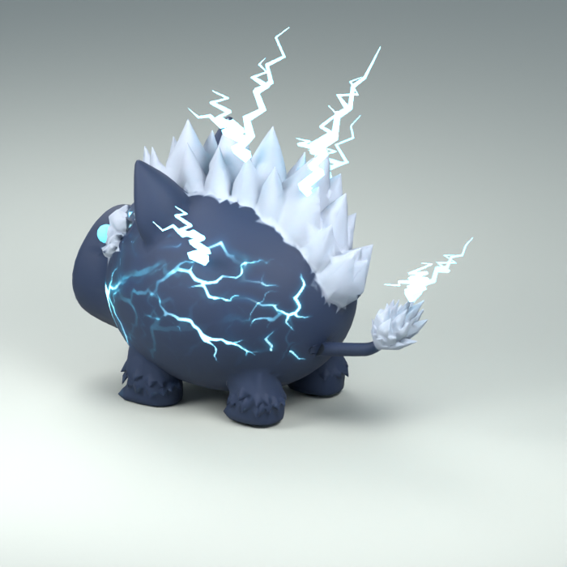
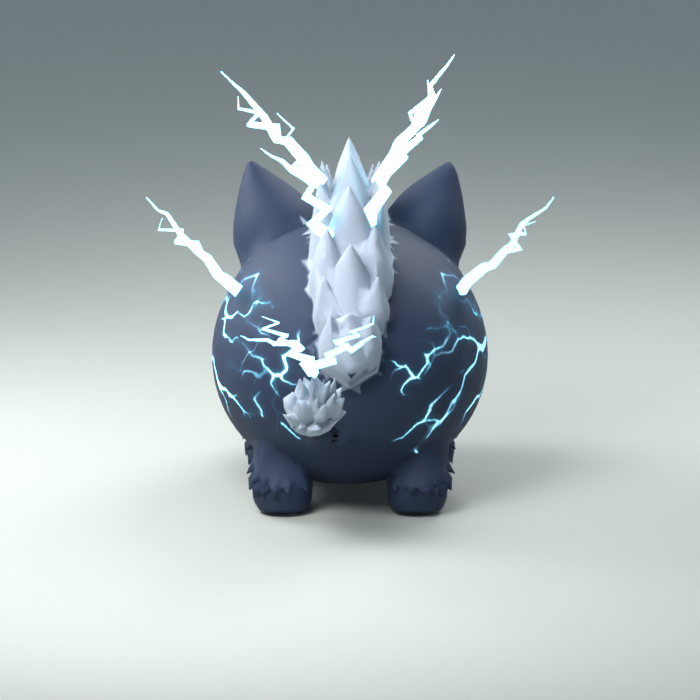

The original tail now sits over the closed attachment. Painted coat, mane and lightning retained.
Editable Blender model · Complete FBX · Studio handoff and checks


Uploaded and connected in Studio. Full-size and miniature runtime checks passed.